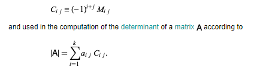
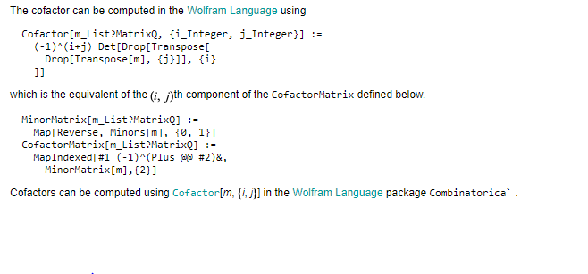
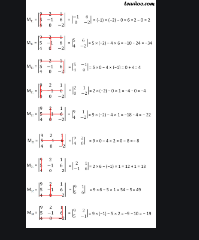
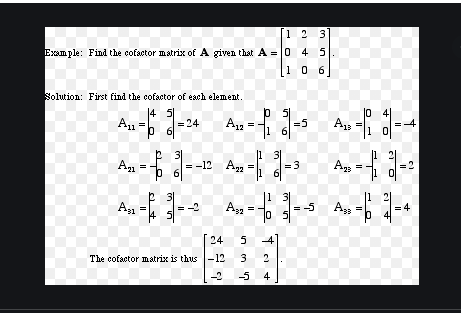

Cofactors
Given a factor a of a number n=ab, the cofactor of a is b=n/a.
A different type of cofactor, sometimes called a cofactor matrix, is a signed version of a minor M_(ij) defined by

and used in the computation of the determinant of a matrix A according to

Example:

Example:
